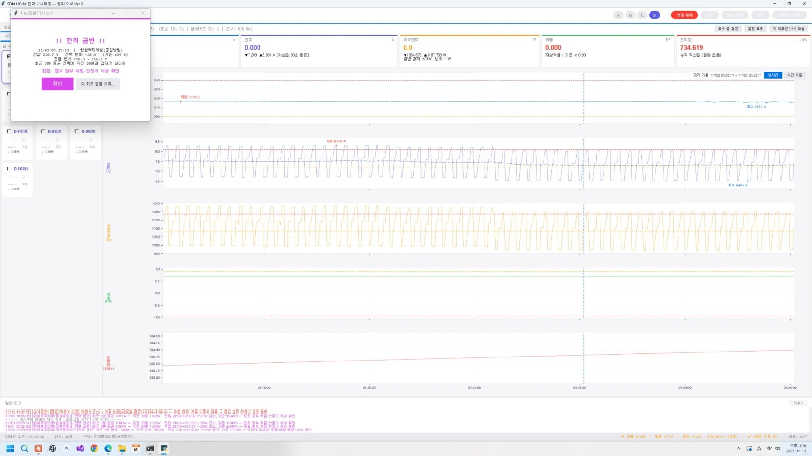
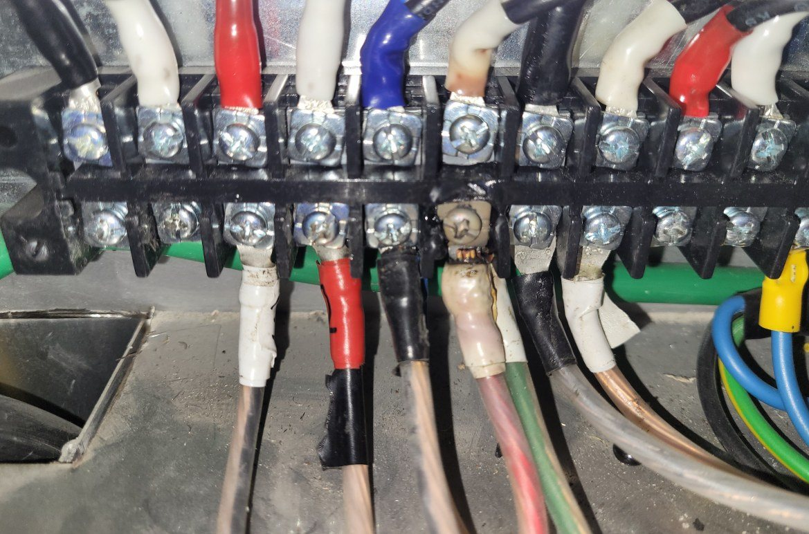
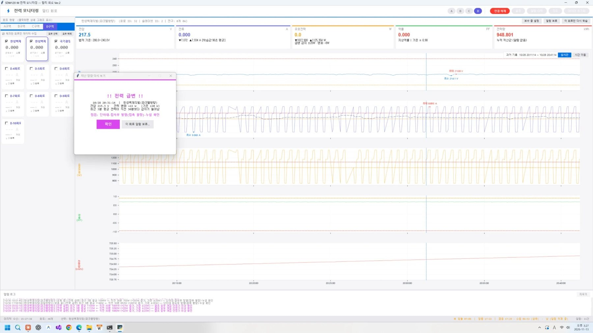
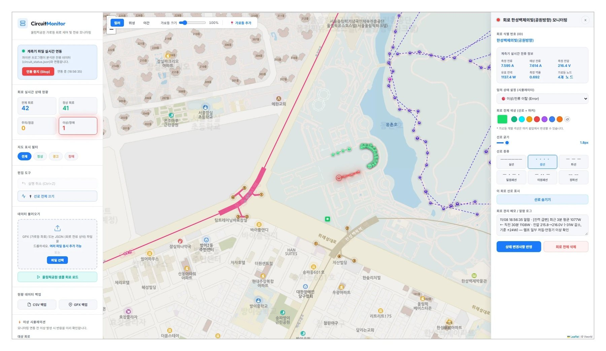

인프라 · 전기
옥외 가로등 원격 감시 시스템 구축
분전함 전력량계로 가로등 회로의 전압·전류·전력을 실시간 측정하고, 회로마다 정상 패턴을 학습해 순회 점검으로는 놓치기 쉬운 이상 징후를 먼저 찾아냅니다.
추진 배경
- 1,000개+공원 가로등 (49종)
- 44개가로등 회로
- 10km+회로 총 연장
- 연 200시간+순회 점검 인력 투입
넓은 공원에 흩어진 가로등을 주 1회 정기 순회와 민원 시 수시 대응에 의존해 왔기 때문에 실시간으로 이상을 파악하기 어렵고, 점검을 놓치면 보수가 늦어졌습니다. 일부 등기구의 출력 저하나 접속부 발열은 눈으로 확인하기 어렵고, 접속부 과열은 화재로 이어질 수 있습니다.
동작 원리
- ① 실시간 계측
- 분전함에 설치한 전력량계로 회로별 전압·전류·전력을 약 2초 간격으로 측정합니다.
- ② 정상 패턴 학습
- 운영 초기 4일간의 데이터로 회로별 정상 범위와 평소 변동 폭을 자동으로 학습합니다.
- ③ 이상 감지·알림
- 정상 범위를 벗어나거나 전력이 급변하면 즉시 경고 창을 띄우고 지도에 해당 회로를 표시합니다.


적용 사례 · 한성백제의빛(파크텔방향) 회로, 2026년 10월
- 감지 · 10.29 야간
- 평소보다 전력이 약 28W 늘어난 것을 두 차례(19:20, 20:02) 감지했습니다. 같은 시각 다른 회로는 정상이었습니다.
- 확인 · 10.30
- 현장에서 겉으로는 구분이 어려웠지만 탄내가 나서 세부 점검한 결과, 단자대(전선 연결부)가 탄화된 것을 확인했습니다.
- 조치
- 단자대를 교체하고 조인 뒤 정상으로 돌아왔으며, 이후 같은 이상은 다시 생기지 않았습니다.
육안 점검으로는 발견하기 어려운 초기 단계에서 찾아내 화재 위험을 미리 막았습니다.


모니터링 · 지도 연동




기대 효과
- 점검 자원 최소화
- 관행적인 전수 순회 점검에서 벗어나 점검 인력의 동선과 시간을 줄입니다.
- 즉각 감지
- 전체 회로를 실시간으로 감시해 점검 누락을 없앱니다.
- 보수 주기 단축
- 이상을 당일 확인해 민원이 생기기 전에 먼저 대응합니다.
- 안전성 향상
- 접속부 과열처럼 화재로 번질 수 있는 이상을 초기에 발견합니다.
추진 경과 및 향후 계획 (2026년)
- 2.20현장 답사 및 회로 부하 점검
- 3.26계측 제품 선정
- 상반기지도 DB 구축 및 프로그램 개발
- 10월3개 회로 계측기 설치·시험 운영
- 10.29단자대 탄화 조기 발견
- 향후공원 전체 44개 회로로 확대